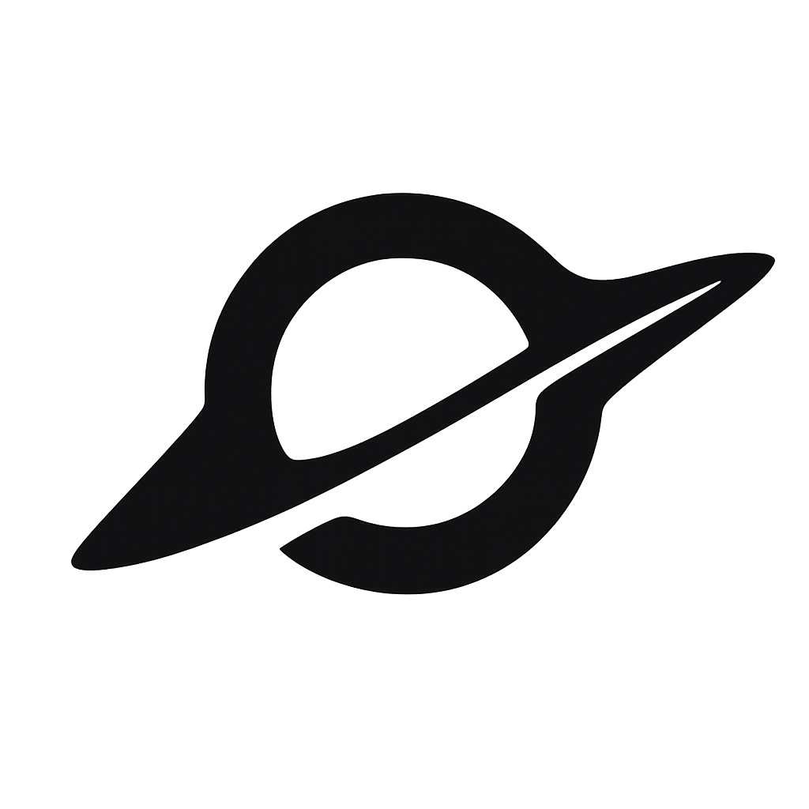

Tracing the first billion years of the Universe with JWST and ALMA.
Chasing Cosmic History: My research focuses on the distant universe. Since light takes time to travel, the farther we look, the further back in time we see. Ever since humanity first looked through a telescope a few hundred years ago, our view of the universe has rapidly expanded, and we’ve continued weaving a story that spans from the distant past to the present. This endeavor addresses some of the most fundamental questions — where did we come from, and where are we going — while also seeking to answer simpler, yet profound, curiosities: what did the first light, the first stars, and the first black holes in the universe actually look like?
To pursue these questions, our group conducts extensive multi-wavelength observations using some of the largest telescopes around the world. We focus on four key observational probes — galaxies, stars and star clusters, black holes, and stellar explosions — aiming to comprehensively understand the formation and evolution of early galaxies through the properties of gas, stars, and dust.
-
Galaxies
We trace how the first galaxies formed and grew across z > 6, combining JWST rest-frame optical spectroscopy with ALMA [CII] 158μm and dust-continuum imaging. Our group has mapped extended [CII] halos, dusty star-forming systems, and the chemical enrichment of normal galaxies in the reionization era, building a coherent picture of the ISM and CGM in the first billion years.
-
Stars & star clusters
Strong gravitational lensing lets us resolve early galaxies down to parsec scales and, in rare cases, individual stars. We study dense star-forming clumps inside z > 6 galaxies, candidate Pop III systems, and lensed stellar transients, asking how the earliest stellar populations and proto-globular clusters assembled.
-

Black holes
JWST has revealed a population of compact, red AGN at z > 4 — the "Little Red Dots" — whose nature is still debated. We measure their black hole masses, accretion rates, and host galaxies to test super-Eddington growth scenarios and to anchor the co-evolution of supermassive black holes with their hosts at cosmic dawn.
-
Supernovae
Lensing clusters act as natural time-domain telescopes. We use multi-epoch JWST imaging of these fields to discover gravitationally magnified supernovae at z > 2 (and push toward z > 10), using them to probe the high-redshift stellar initial mass function, cosmic expansion via lensing time delays, and the chemical legacy of the first stellar explosions.